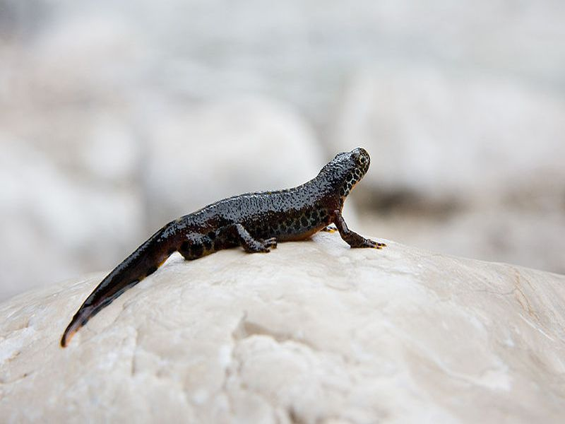

Bergmolch
Triturus alpestris
Dies ist die einzige Schwanzlurchart des Riedes. Die erwachsenen Tiere sind nachtaktive Landbewohner. Ihre Beute besteht aus Insekten, Spinnen, Froscheiern und Würmern. Gegen Ende des Winters suchen die geschlechtsreifen Molche zur Fortpflanzung Torfstiche, Gräben und auch die Tümpel des Riedlehrpfades auf.